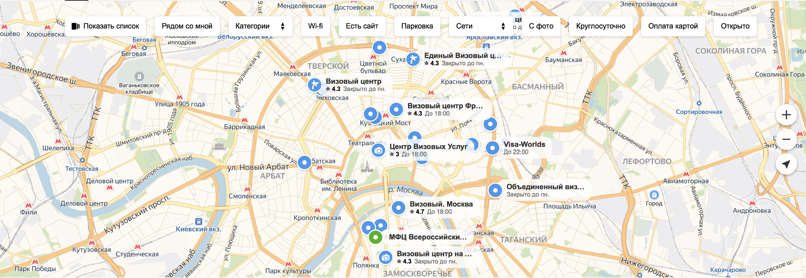

Оформлении шенгенской визы в России
Я много путешествую и так сложилось, что всегда все визы оформлял самостоятельно. Для большего удобства эту статью я разделю на две части: в первой вы узнаете какие организации занимаются оформлением виз, а во второй я поделюсь личными лайфхаками полезными при самостоятельном оформлении документов.

Часть 1
Оформляя третий шенген, я окончательно разобрался в многообразии учреждений оформляющих визы для россиян. Начну по порядку:
- Посольство страны занимается только делами своей страны и своих граждан и визы не выдает.
- Консульство страны — непосредственный орган выдающий визу. Однако попасть туда непросто — запись расписана на недели вперед. А учреждение находится обычно только в столице. Единственная причина, почему там стоит оформлять визу — материальная выгода, ведь там оплачивается только консульский сбор.
- Визовый центр — авторизованная консульством организация. Преимуществами данных организаций являются: их нахождение практически во всех регионах в отличии от консульств, а также возможность быстрого и сравнительного легкого процесса подачи заявления (запись производится на 1–2 дня вперед или в порядке живой очереди), а ещё все документы проходят предварительную проверку специалистом.
Консульству выгодно работать через визовые центры, тк ваши документы проверяются, и подаются пачками в оговоренном формате.
Рассмотрение документов на стандартную (не ускоренную) визу в среднем занимает одну рабочую неделю. За скорость процесса необходимо будет немного потратиться — стоимость складывается из консульского и визового сборов (те деньги, на которые визовый центр существует).
- Визовые центры 2-го уровня — частные компании, занимающиеся оформлением виз через аккредитованные консульством визовые центры (название придумано самостоятельно). Расскажу подробнее в отдельном блоке.
Визовые центры 2-го уровня
В любом случае компании печатают бланк анкеты и заполняет его за вас. В случае, если у вас куплены билеты или уже забронирован отель, компания может использовать ваши брони. В остальных случаях она делает возвратные брони на билеты и проживание, также вполне может сделать возвратную страховку (по правилам EU будучи туристом, вы обязаны быть застрахованы, поэтому будьте аккуратнее, обычно вы платите столько же сколько стоит целая страховка, а не получаете ничего).
Обычно услуги таких компаний делятся на два типа:
- Полное оформление визы. В этом случае вы предоставляете только паспорт, справку с работы и справку о состоянии счета. “Интересные конторы” обходятся вообще только с одним паспортом.
- Подготовка документов для самостоятельной подачи.
Посидев пару дней за интернетом или минут 30, если вы делаете это не в первый раз, можно обойтись без услуг этих визовых центров.
Однако у них есть интересный аспект: дело в том, что эти компании аккредитованы или по крайней мере у них есть договоренность с обычным визовым центром. И в случае, если у Вас сдана биометрия (она действует 5 лет), вы можете оформить визу удаленно (без личного участия). В принципе, вы можете оформить визу, находясь в другой стране, просто переслав паспорт. В ином случае за вас это может сделать только ваш близкий родственник, который не всегда обладает компетенциями.
У таких компаний фиксированный визовый сбор чуть выше, чем у частного лица + своя комиссия. Однако многие, кто делают визу впервые или не хотят заморачиваться, делают ее через такие организации, явно переплачивая.### Часть 2: Лайфхаки оформления визы
Советы ниже в основном относятся к заполнению анкеты и подготовки документов
- Во всех бумагах, подтверждающих бронирование, должно присутствовать имя, точно соответствующее имени в паспорте, на анийском!
- Разные страны принимают анкеты заполненные на разных языках, например Чехия принимает на английском, русском, чешском, немецком язах
- Сбор в визовый центр можно не платить, если обращаться напрямую в консульство
- Если оформлять мультивизу то даты пишутся на год и количество дней 90 (в Италии “90” или “90gg”, “1 anno”, “2 anno”)
- Есть негласные правила, что после однократной визы, можно падать следующую заявку на год, а затем можно претендовать на 2х годичную визу. Также можно всегда указывать максимальный срок в 5 лет, при этом консульства сами решают на сколько вам дать визу. Но это стоит делать, если у вас за плечами уже несколько шенгенов с хорошей визовой историей.
- Оплата консульского сбора проводится в валюте и только аккредитованным банком. Представительство банка обычно находится в самом визовом центре (для Италии это банк Интеза). Интересным моментом является то, что вы можете воспользоваться и другим филиалом этого банка. Оплату зачастую принимают только наличными, поэтому нужны либо рубли, либо валюта.
Полезные ссылочки
Если вы узнали что-то интересное чем хотите поделиться — напиши в комментарий. Я с удовольствием дополню материал.
Легких вам виз и незабываемых путешествий!